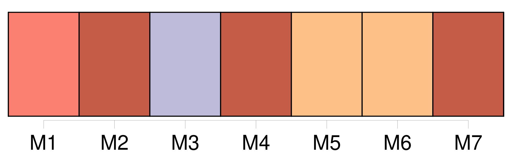
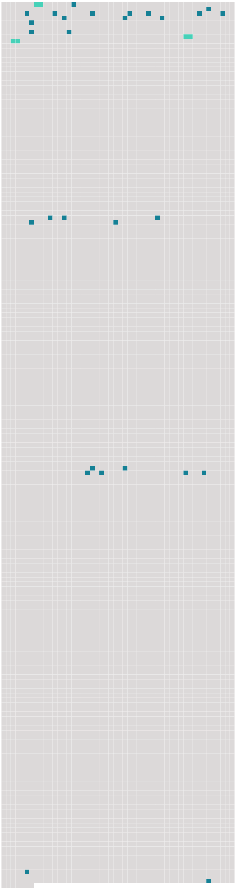

Longueur nb maillons : 31 mentions |
 |
Pour la première fois, j'eus [un ami] J'aimais à quêter avec [sa] sœur. [5 phrases] [René] allait au lycée Henri Iv, et je serais dans [sa] classe, en troisième. [Il] ne devait pas apprendre le grec ; [il] me fit cet extrême sacrifice de convaincre [ses] parents de le [lui] laisser apprendre. [1 phrases] Comme [il] n'avait pas fait [sa] première année, c'était s'obliger à des répétitions particulières. Les parents de [René] n'y comprirent rien, qui, l'année précédente, devant [ses] supplications, avaient consenti à ce qu' [il] n'étudiât pas le grec.
Ils y virent l'effet de ma bonne influence, et, s'ils supportaient [ses] autres camarades, j'étais, du moins, le seul ami qu'ils approuvassent. [3 phrases]
Le jour de la rentrée des classes, [René] me fut un guide précieux.
Avec [lui] tout me devenait plaisir, et moi qui, seul, ne pouvais avancer d'un pas, j'aimais faire à pied, deux fois par jour, le trajet qui sépare Henri Iv de la gare de la Bastille, où nous prenions notre train.
Trois ans passèrent ainsi, sans autre amitié et sans autre espoir que les polissonneries du jeudi – avec les petites filles que les parents de [mon ami] nous fournissaient innocemment, invitant ensemble à goûter les amis de [leur fils] et les amies de leur fille –, menues faveurs que nous dérobions, et qu'elles nous dérobaient, sous prétexte de jeux à gages. [105 phrases] Le lendemain, au lycée, je n'éprouvai pas le besoin de raconter à [René] , à [qui] je disais tout, ma journée du dimanche. Mais je n'étais pas d'humeur à supporter qu' [il] me raillât de n'avoir pas embrassé Marthe en cachette.
Autre chose m'étonnait ; c'est qu'aujourd'hui je trouvai [René] moins différent de mes camarades.
Ressentant de l'amour pour Marthe, j'en ôtais à [René] , à mes parents, à mes sœurs. [126 phrases] Je me rendais bien compte que, si j'aimais moins [René] , c'était simplement parce qu' [il] me rappelait quelque chose du collège. [1 phrases] Pour le malheur de [René] , je [lui] avais trop bien fait partager mon vice. Aussi, lorsque, moins habile que moi, [il] m'annonça qu' [il] était renvoyé de Henri Iv, je crus l'être moi -même. [230 phrases] À dîner, j'annonçai à mes parents que j'entreprendrais le lendemain avec [René] une longue promenade dans la forêt de Sénart. [5 phrases] J'eus beau dire à ma mère que [René] s'était muni de tout, elle ne voulut rien entendre. |
 |
Il est possible de télécharger la ressource sur la page Ortolang |
Si vous avez des questions ou vous voyez des erreurs, merci d'envoyer un mail à silvia.federzoni89@gmail.com |